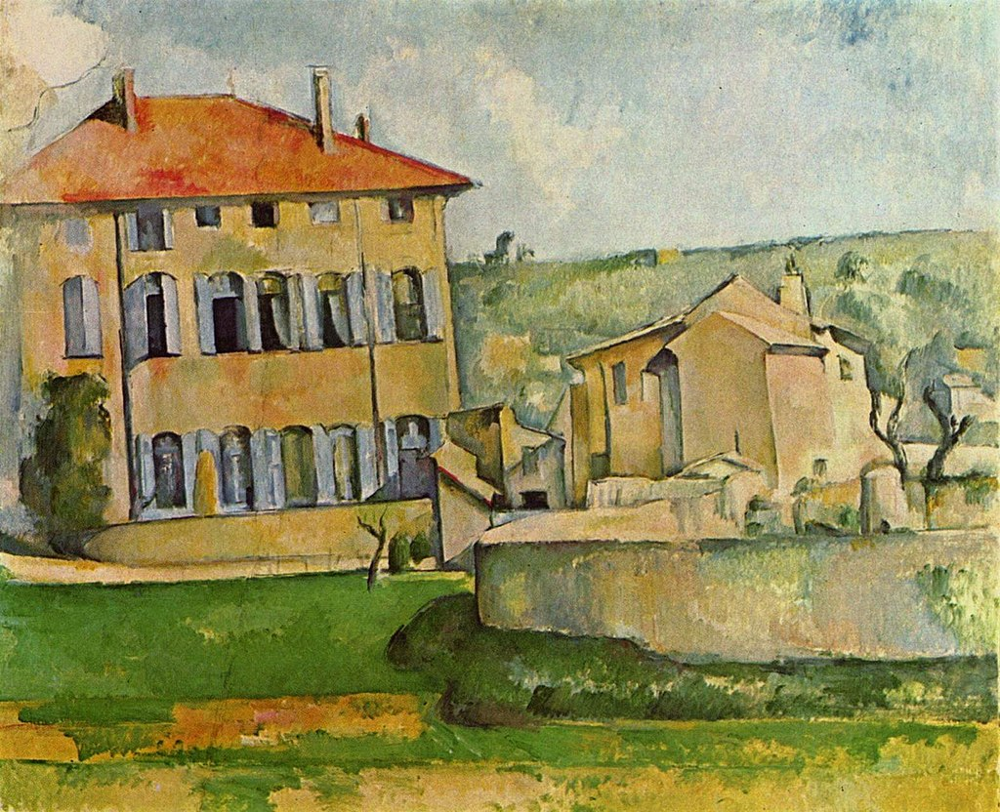

<head>
<meta charset="UTF-8" />
<meta name="keywords" content="drawing, painting" />
<meta name="description" content="drawings by Sunjy" />
<title>Sunjy</title>
<link rel="shortcut icon" type="image/x-icon" href="../../mImages/mCommon/favicon.ico" media="screen" />
<link rel="stylesheet" type="text/css" href="../../mCsses/mCommon/mCssA.css" />
<link rel="stylesheet" type="text/css" href="../../mCsses/mCommon/mCssB.css" />
<link rel="stylesheet" type="text/css" href="../../mCsses/mCommon/mCssC.css" />
<link rel="stylesheet" type="text/css" href="../../mCsses/mCommon/mCssD.css" />
<link rel="stylesheet" type="text/css" href="../../mCsses/mContent/mCssA.css" />
<link rel="stylesheet" type="text/css" href="../../mCsses/mContent/mCssB.css" />
<link rel="stylesheet" type="text/css" href="../../mCsses/mContent/mCssC.css" />
<link rel="stylesheet" type="text/css" href="../../mCsses/mContent/mCssD.css" />
</head>
<script type="text/javascript" src="../../mScripts/mContent/mContentAA.js" /></script>
<script type="text/javascript" src="../../mScripts/mContent/mContentAB.js" /></script>
<script type="text/javascript" src="../../mScripts/mContent/mContentAC.js" /></script>
<script type="text/javascript" src="../../mScripts/mContent/mContentAD.js" /></script>
<script type="text/javascript"></script> 
<script type="text/javascript">
document.write('<div class="mImgAbsolute"></div>');
/*
document.write('<p class="mFontSizeBColor" />From a white paper...</p>');
document.write('<table class="center"><tr><td>');
document.write('');
document.write('</td></tr></table>');
*/
</script>


<script type="text/javascript">
document.write('<p class="mFontSizeBColor" />Jas de Bouffan house and farm</p>');
document.write('<p class="mFontSizeSColor" />“Jas de Bouffan house and farm” by Paul Cézanne depicts an 18th-century homestead in Aix-en-Provence, where the artist spent much of his life. The color of the painting is applied in a transparent layer.<br><br>Provençal manor such as these was called a “bastide” and was built about 1750. Bastide is the local term for a manor house in Provence, in the south of France, located in the countryside or a village, and initially occupied by a wealthy farmer.<br><br>A bastide was more extensive and more elegant than a farmhouse and was square or rectangular, with a tile roof. The walls were constructed of fine ashlar-stone sometimes covered with stucco or whitewashed, and often built in a square around a courtyard.<br><br>In the 19th and 20th centuries, many of these “besides” were used as summer houses by wealthy citizens of Marseille and Paris. The bastide was surrounded by a private garden with ponds, fountains, and sculptures.<br><br>In this painting, Cézanne arranged the individual geometric parts of the building into solid malleable compositions. Volumes are not mediated by a linear layer, but rather by the arrangement of shapes.<br></p>');
document.write('<table class="center" /><tr><td>');
document.write('<br>Provençal manor such as these was called a “bastide” and was built about 1750. Bastide is the local term for a manor house in Provence, in the south of France, located in the countryside or a village, and initially occupied by a wealthy farmer.<br><br>A bastide was more extensive and more elegant than a farmhouse and was square or rectangular, with a tile roof. The walls were constructed of fine ashlar-stone sometimes covered with stucco or whitewashed, and often built in a square around a courtyard.<br><br>In the 19th and 20th centuries, many of these “besides” were used as summer houses by wealthy citizens of Marseille and Paris. The bastide was surrounded by a private garden with ponds, fountains, and sculptures.<br><br>In this painting, Cézanne arranged the individual geometric parts of the building into solid malleable compositions. Volumes are not mediated by a linear layer, but rather by the arrangement of shapes.<br>" />');
document.write('</td></tr></table>');
</script>


